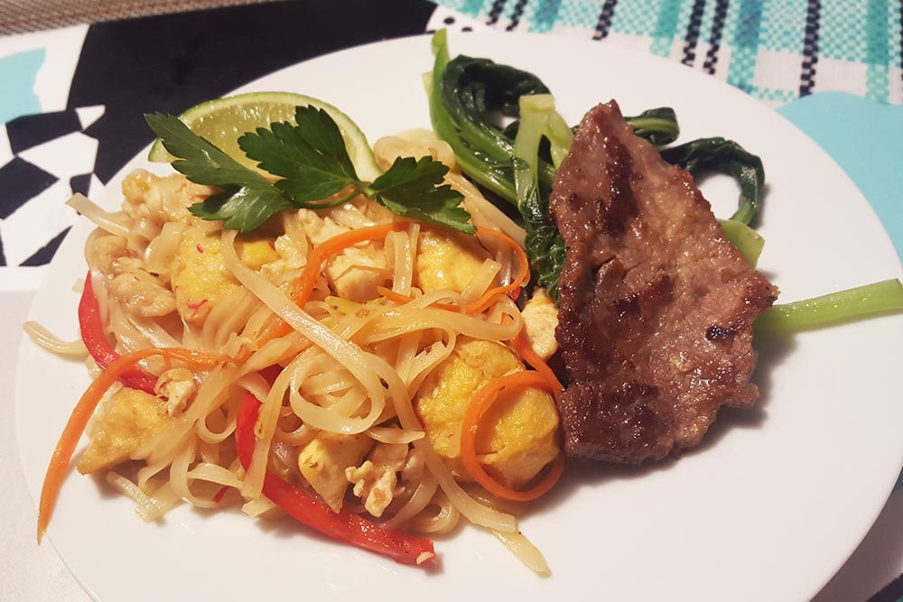

Recipes
Made from scratch. Here are a few of my favorite recipes. This is just the beginning and there will be more to come.
Healthy Chicken Pad Thai

Ingredients for 4-6 servings
Main:
- 1 raw chicken breast
- 200g flat brown rice noodles
- 2 tbsp finely chopped garlic
- 1 red bell pepper
- 1 shredded carrot
- 1 cup mushrooms (optional)
- 1.5 cup green onions (chopped)
- 2 cup bean sprouts
- 1.5 cup Firm tofu
- fresh parsley
Sauce:
- 1/8 cup rice vinegar
- 1/8 cup fish sauce
- 1/8 cup Coconut Aminos (low sodium soy sauce)
- 1/8 cup Red chili pepper sauce
- 3 tbsp coconut sugar
- juice from 1 lime
- Juice from 1/2 mandarin orange
- 3 tsp tomato paste
Instructions
- Soak brown rice noodles in warm water. Drain and set aside when softened.
- Chop up veggies – bell pepper, carrot, mushrooms, green onions, parsley.
- Slice chicken breast into small pieces. Marinate with 1 tbsp corn starch, 1tsp coconut amino, garlic powder, white pepper.
- In a bowl, mix rice vinegar, fish sauce, coconut sugar, red chili pepper sauce, tomato paste, fresh orange juice & fresh lime juice.
- Warm a pan with coconut oil, then add garlic. Toss in chicken breast pieces and cook.
- Add in fresh veggies with a bit of sauce.
- Finally, incorporate noodles and mix in remaining sauce.
Broccoli Burgers

Ingredients for 10-12 burgers
For burgers:
- 2 heads of broccoli, washed and cut
- 2 eggs
- 1 medium potato, diced
- 1-2 carrots, peeled
- 1-2 sweet peppers
- 1 onion, peeled and sliced
- 1 sweet potato, wrapped in foil
Seasoning:
- avocado oil
- Himalayan salt
- garlic powder
- pepper
- 2 tsp corn starch
Instructions
- Place cut up onion, carrots, peppers into a large glass mixing bowl.
- Season with avocado oil, salt, pepper, garlic powder and toss.
- Place vegetables and sweet potato onto a baking pan then roast in the oven at 375 degrees for 25 minutes or until soft.
- Put diced potato into the glass bowl and microwave for 3 minutes or until soft enough to mash.
- Place cut up broccoli into a food processor and process until it is finely chopped. Add broccoli to the potato in the bowl.
- Add roasted vegetables to the food processor and pulse until finely chopped. Add to the mixing bowl.
- In bowl, mix all the ingredients together with eggs, corn starch, and a sprinkle of salt, pepper, and garlic powder until fully incorporated. The mix should be solid enough to form patties.
- Form mix into balls, flatten them into patties, and then pan fry them on medium heat with a bit of avocado oil.
Raw Vegan Avocado Lemon Tarts

I originally wanted to make key lime pie but had lemons, so therefore they became lemon tarts. You can sub in any nut you want too.
Ingredients
Crust:
- 1 cup dried unsweetened shredded coconut
- 1 cup dry almonds (not soaked)
- 3/4 to 1 cup organic raisins (or 4-6 medjool dates)
- pinch of himalayan salt
Filling:
- 2 small avocados
- 1 cup soaked almonds(or cashews, any nut you like)
- 1/4 cup lemon juice
- 2 tbsp orange zest
- 1/3 cup maple syrup
- 1/4 tsp sea salt
- 2 tsp pure vanilla extract or 1/2 vanilla bean
- 1/4 cup of coconut oil (melted)
Instructions
For the crust:
- Place coconut flakes, almonds, raisins and slat into food processor and blend until mixture starts to come together when squeezed.
- Place muffin cups into muffin try and press the mixture into the bottom and sides of the try, to form a cup. OR if you’re doing a cake, use a 6” springform pan and press into the bottom.
- Place into fridge or freezer to chill while you prepare the filling.
For the filling:
- Combine avocado, almonds, lemon, zest, maple syrup, salt, coconut oil, and vanilla into food processor or blender. Process until smooth.
- Put filling into the the crusts and place in fridge or freezer for 2-3 hours to chill and firm up.
- Enjoy!!